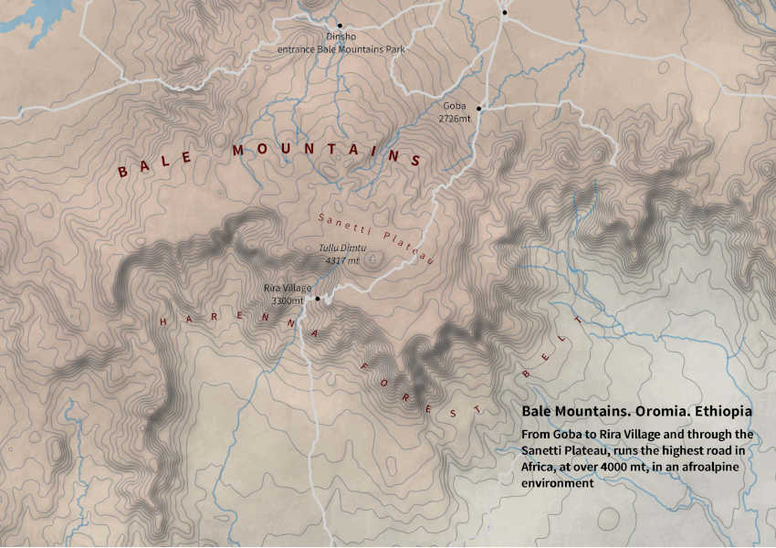

Regione Oromia, Etiopia
Sanetti Plateau, Bale Mountains, la più alta strada d'Africa
Dall'ultimo avamposto civile di Bale Goba fino al piccolo villaggio di Rira, per quaranta chilometri lungo il Sanetti Plateua a quattromila metri di altezza, in una vegetazione afroalpina, corre la più alta strada d'Africa. Tra nuvole che si possono toccare e cambiano ogni minuto, sulla piana si incontrano branchi di cavalli e mandrie di bestiame degli allevatori oromo, in questa che è la patria dell'"oromumma", della oromicità.
Map by fabio artoni/fiftylemons

Cosa racconta questa mappa
Segnato in corsivo, più o meno al centro di questa mappa, c'è il Tullu Dimtu, 4317 metri, la seconda vetta più alta d'Etiopia. La prima è il Ras Dashen, 150 metri in più, sulla catena dei Simien. Simien e Bale sono entrambi grandi vulcani. Dei Simien, Eugenio Turri scrive: "Torrioni, balconate, ripiani e terrazze sospese sui vuoti... la spettacolarità è nelle forme che l'erosione crea con il suo processo distruttivo". Sulle montagne del Bale l’erosione ha preso una forma diversa, quella glaciale, perché queste montagne erano coperte da una vasta coltre di ghiaccio, come le montagne dell’Arsi, poco più a ovest.Il plateau Sanetti, quasi quaranta chilometri pianeggianti a quattromila metri, tra laghetti di acqua purissima, erica bassa e lussureggianti lobelie alte fino a quattro metri è un esempio del lavoro abrasivo dei ghiacciai. Dalla piana si alzano rilievi morbidi, come il Tullu Dimtu e il Batu, ma talvolta anche degli spuntoni più aguzzi i “neck”, che sono camini vulcanici in cui il magnma è solidificato e sono (sempre per il momento) sopravvissuti all’erosione che ha tolto di torno il materiale più morbido e ha lasciato solo la forma del camino solidificata.
La vegetazione è afro-alpina e sulla piana, se si ha pazienza, si possono vedere le sagome dei key kebero, i lupi rossi del Bale. Lungo il Sanetti Plateau corre la più alta strada d'Africa, sterrata, percorsa da autobus che sembrano vecchi leoni. Bale Goba è l'ultimo avamposto cittadino prima di salire sul plateau. (Chiesi a una guida del parco cosa significa Sanetti, ma la spiegazione non mi sembrò convincente: "posto dove le mucche possono bere ma l'acqua è troppo fredda".) Tra un bagno di luce che cambia seguendo nuvole che si possono toccare si incontra il bivio per il Tullu Dimtu. Poi la strada arriva sul margine del vulcano, dove le curve di livello dove le curve di livello sulla mappa si infittiscono. Il fronte sud del vulcano è una lungo e sinuoso burrone originato da erosione fluviale regressiva, o rimontante (headward erosion), causate da fiumi.
Si scende tra tornanti in mezzo all'erica fino alla foresta di Harenna, una cintura boscosa che cinge il fronte sud del vulcano di podocarpi, ginepri e muschi da foresta incantata. Scesi di mille metri si arriva a Rira, un villaggio con un unico ristoro dove si assaggia una piadina con cavolo verde o una piadina con miele di foresta, ancora con le api dentro.
Il massiccio vulcanico del Bale è in Oromia, ma l'Oromia è talmente vasta che bisogna parlare di Arsi Bale per intendersi, il granaio d'Etiopia. Si parla in oromo con allevatori e contadini ma soprattutto si intuisce la potenza di un popolo di cinquanta milioni di persone unite da una lingua comune, tradizioni e la "oromummma", oromicità. Seguendo la strada verso sud, in mezzo alla foresta, le curve di livello dopo un po' si allargano e il borana, Neghelle Borana, non è distante. Le montagne del Bale sono un parco nazionale, l'entrata è a Dinsho, a nord sulla mappa e più in basso, tra foreste di ginepri. Sempre a nord, si vede una strada che va verso est: scende fino alle grotte Sof Omar e verso il deserto dell'Ogaden.